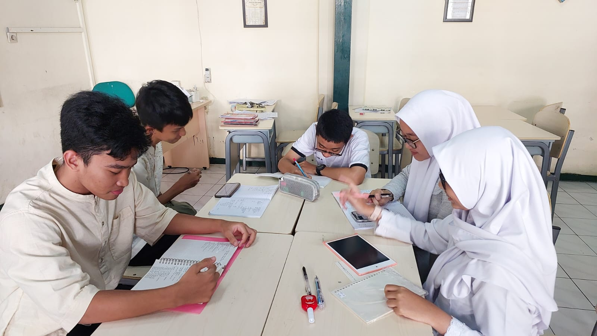
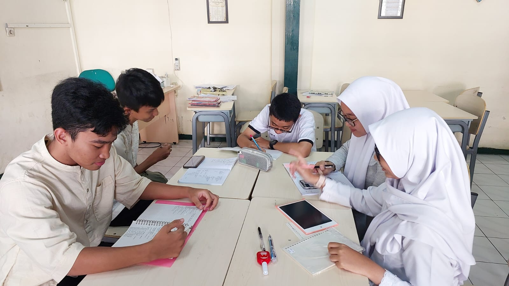

Pelatihan Olimpiade Sains Nasional (OSN) di SMA Negeri 3 Bandung merupakan program unggulan yang diadakan secara rutin untuk mempersiapkan siswa berprestasi menghadapi kompetisi sains tingkat nasional. Pelatihan ini bertujuan untuk mengembangkan potensi akademik siswa dalam bidang sains, seperti Matematika, Fisika, Kimia, Biologi, dan bidang lainnya. Program ini dirancang khusus untuk siswa yang memiliki minat dan bakat dalam ilmu pengetahuan, dengan harapan mereka dapat berprestasi di tingkat yang lebih tinggi.
Pelatihan OSN di SMA Negeri 3 Bandung dilakukan secara intensif oleh guru-guru yang berkompeten di bidangnya. Selain itu, sekolah juga kerap mendatangkan mentor atau pembina eksternal yang merupakan ahli di masing-masing bidang sains. Hal ini dilakukan agar siswa mendapatkan panduan yang lebih mendalam dan berkualitas, sehingga mereka lebih siap dalam menghadapi soal-soal olimpiade yang seringkali membutuhkan pemahaman konsep yang mendalam dan kemampuan analisis tinggi.
Program pelatihan ini tidak hanya fokus pada pemberian materi, tetapi juga latihan soal dan simulasi kompetisi. Siswa dilatih untuk dapat berpikir kritis dan cepat dalam memecahkan masalah. Simulasi kompetisi sering diadakan untuk membiasakan siswa dengan tekanan waktu dan suasana lomba yang sesungguhnya. Dengan cara ini, siswa diharapkan dapat mengasah kemampuannya serta terbiasa dengan situasi kompetisi, sehingga tidak mudah gugup ketika berhadapan dengan tantangan nyata.
 

Salah satu keunggulan pelatihan OSN di SMA Negeri 3 Bandung adalah adanya sistem mentoring individu. Setiap siswa yang terpilih untuk mengikuti pelatihan akan dibimbing secara personal oleh mentor yang ditugaskan khusus untuk mereka. Pendekatan ini memungkinkan mentor untuk memantau perkembangan siswa lebih detail dan memberikan solusi spesifik terhadap kesulitan yang dihadapi siswa dalam materi tertentu.
Prestasi yang telah diraih siswa SMA Negeri 3 Bandung dalam ajang OSN tingkat kota, provinsi, hingga nasional tidak lepas dari peran penting pelatihan ini. Setiap tahun, SMA Negeri 3 Bandung selalu berhasil meloloskan sejumlah siswa untuk berlaga di tingkat provinsi dan nasional. Hal ini menjadikan sekolah ini dikenal sebagai salah satu sekolah yang memiliki reputasi tinggi dalam dunia olimpiade sains di Indonesia.
Dengan pelatihan yang terstruktur dan dukungan penuh dari pihak sekolah, SMA Negeri 3 Bandung berharap dapat terus mencetak generasi muda yang berprestasi di bidang sains. Program ini tidak hanya membekali siswa dengan pengetahuan akademik, tetapi juga membentuk karakter siswa untuk berkompetisi secara sportif, bekerja keras, dan pantang menyerah dalam meraih mimpi-mimpi mereka.